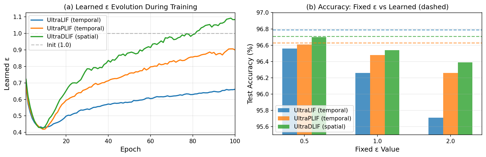

Center for AI Research PH
Spiking Neural Networks (SNNs) offer energy-efficient, biologically plausible computation but suffer from non-differentiable spike generation, necessitating reliance on heuristic surrogate gradients. This paper introduces UltraLIF, a principled framework that replaces surrogate gradients with ultradiscretization, a mathematical formalism from tropical geometry providing continuous relaxations of discrete dynamics. The central insight is that the max-plus semiring underlying ultradiscretization naturally models neural threshold dynamics: the log-sum-exp function serves as a differentiable soft-maximum that converges to hard thresholding as a learnable temperature parameter ε → 0. Two neuron models are derived from distinct dynamical systems: UltraLIF from the LIF ordinary differential equation (temporal dynamics) and UltraDLIF from the diffusion equation modeling gap junction coupling across neuronal populations (spatial dynamics). Both yield fully differentiable SNNs trainable via standard backpropagation with no forward-backward mismatch. Theoretical analysis establishes pointwise convergence to tropical LIF dynamics with quantitative error bounds and bounded non-vanishing gradients. Experiments on six benchmarks spanning static images, neuromorphic vision, and audio demonstrate improvements over surrogate gradient baselines, with gains most pronounced in the ultra-low latency regime (T=1) on neuromorphic and temporal datasets. An optional sparsity penalty enables significant energy reduction while maintaining competitive accuracy.
Figure 1. Spike activation functions and their gradients. (a) The Heaviside (hard threshold) has zero gradient almost everywhere. Surrogate gradient methods replace it with a smooth proxy during training only, creating a mismatch. UltraLIF uses the same smooth function in both forward and backward passes — no mismatch by construction. (b) Gradients: UltraLIF provides bounded, non-vanishing gradients for all membrane potentials.
Spiking Neural Networks are brain-inspired AI models that communicate through brief electrical pulses, making them far more energy-efficient than conventional AI. However, a fundamental training challenge has persisted as an open problem: the “spike” is like an on/off switch, and on/off switches have no smooth middle ground for standard learning algorithms to work with. Current methods work around this by teaching the network using a smoothed approximation of the spike during training, then switching to the real discrete spike at test time, creating a mismatch between how the model learns and how it actually runs. This inconsistency is a known limitation of virtually all existing SNN training methods.
This work introduces UltraLIF, a spiking neuron derived from first principles using a mathematical technique from physics called ultradiscretization. Rather than approximating the spike, the smooth trainable operation emerges directly from the neuron’s governing equation, making training and inference identical by construction. A temperature parameter, learned automatically during training, controls how sharp each spike is and adapts to the complexity of the task.
UltraLIF outperforms existing methods across six benchmarks, including spoken word recognition, moving-object detection from event-driven cameras, and standard image classification. It also scales to larger, deeper architectures where conventional spiking neurons permanently switch off and stop learning — a failure mode UltraLIF resolves through its self-adjusting firing sensitivity.
In UltraLIF, a single learnable parameter ε controls the softness of the spike function s = σ(V / ε) and its gradient. Drag the slider to see both effects simultaneously. At small ε the neuron fires sharply (near-binary), but gradients become concentrated near the threshold. At large ε the response is smooth and gradients are wide — but spikes lose discriminability.
In standard UltraLIF a single ε does two jobs at once: it sets the softness of the max-plus (LSE) membrane update and the spike sharpness (= 1/ε), so the two are coupled. The decoupled variant (UltraLIF-DS) adds a separate spike scale β, giving each parameter one clean role: ε = membrane smoothness and β = spike sharpness, set independently. Drag ε to reshape the membrane (left); drag β to sharpen the spike (right) without touching the membrane.
The primary advantage of UltraLIF appears at a single timestep (T=1), where surrogate gradient methods suffer most from forward-backward mismatch. Results below compare the best UltraLIF variant against the best surrogate-gradient baseline on each dataset (1-layer FC, hidden=64, 100 epochs). Gains are largest on temporally-structured data: +11.22% on spoken digits (SHD), +7.96% on event-camera gestures (DVS-Gesture), +3.91% on spiking MNIST (N-MNIST).
| Dataset | Type | Best Ultra (T=1) | Model | Best Baseline | Baseline Model | Gain |
|---|---|---|---|---|---|---|
| MNIST | Static | 95.67% | UltraDLIF | 95.58% | DSpike+ | +0.09% |
| Fashion-MNIST | Static | 83.02% | UltraPLIF | 82.67% | DSpike+ | +0.35% |
| CIFAR-10 | Static | 43.27% | UltraPLIF | 40.26% | DSpike+ | +3.01% |
| N-MNIST | Neuromorphic | 94.14% | UltraDLIF | 90.23% | DSpike | +3.91% |
| DVS-Gesture | Neuromorphic | 60.23% | UltraPLIF | 52.27% | PLIF | +7.96% |
| SHD | Audio spike | 51.24% | UltraDLIF | 40.02% | FullPLIF | +11.22% |
| Dataset | Best Ultra | Best Baseline | Gain (pp) | Relative gain |
|---|---|---|---|---|
| MNIST | 95.67% | 95.58% | +0.09 | +0.1% |
| Fashion-MNIST | 83.02% | 82.67% | +0.35 | +0.4% |
| CIFAR-10 | 43.27% | 40.26% | +3.01 | +7.5% |
| N-MNIST | 94.14% | 90.23% | +3.91 | +4.3% |
| DVS-Gesture | 60.23% | 52.27% | +7.96 | +15.2% |
| SHD | 51.24% | 40.02% | +11.22 | +28.0% |
Standard LIF suffers dramatic accuracy collapse when depth increases at T=1, because forward-backward mismatch compounds across layers. UltraLIF degrades minimally. The most striking example is SHD: adding a second hidden layer causes LIF to collapse from 37.9% to 19.5% (−18.4pp), while UltraDLIF drops only from 53.8% to 50.8% (−2.9pp). Ultra wins all 6 datasets at 3 layers, T=1.
2-Layer FC — T=1
| Dataset | LIF | UltraDLIF | UltraDPLIF | UltraLIF | UltraPLIF |
|---|---|---|---|---|---|
| MNIST | 95.97% | 96.10% | 96.10% | 95.90% | 96.22% |
| Fashion | 82.65% | 83.43% | 83.43% | 83.07% | 83.45% |
| CIFAR-10 | 40.89% | 44.20% | 44.20% | 43.44% | 44.63% |
| N-MNIST | 90.01% | 94.94% | 94.94% | 90.74% | 94.10% |
| DVS-Gesture | 52.27% | 51.52% | 51.52% | 53.41% | 56.44% |
| SHD | 19.48% (−18.4pp) | 50.84% | 50.84% | 36.09% | 42.01% |
3-Layer FC — T=1
| Dataset | LIF | UltraDLIF | UltraDPLIF | UltraLIF | UltraPLIF |
|---|---|---|---|---|---|
| MNIST | 95.90% | 96.22% | 96.22% | 95.63% | 96.35% |
| Fashion | 82.90% | 83.55% | 83.55% | 82.23% | 83.42% |
| CIFAR-10 | 40.35% | 43.64% | 43.64% | 43.01% | 44.15% |
| N-MNIST | 87.82% | 94.87% | 94.87% | 93.45% | 93.68% |
| DVS-Gesture | 50.38% | 51.14% | 51.14% | 39.39% | 43.94% |
| SHD | 21.73% | 45.67% | 45.67% | 24.25% | 30.70% |
A sparsity penalty λ on the mean spike rate is added to the cross-entropy loss: Loss = CE + λ · s̄. This directly reduces synaptic operations (energy ∝ spike rate × T) with minimal accuracy cost, since UltraLIF’s learnable ε can adapt to compensate.
Energy efficiency with sparsity penalty (λ = 0.1) — UltraPLIF across all datasets
| Dataset | T | Acc. (λ=0) | Acc. (λ=0.1) | Spike rate (λ=0) | Spike rate (λ=0.1) | Reduction |
|---|---|---|---|---|---|---|
| MNIST | 1 | 95.67% | 95.71% ↑ | 0.445 | 0.268 | 40% |
| MNIST | 10 | 97.35% | 97.35% | 0.473 | 0.239 | 50% |
| Fashion-MNIST | 1 | 82.79% | 83.05% ↑ | 0.428 | 0.266 | 38% |
| Fashion-MNIST | 10 | 85.69% | 85.74% ↑ | 0.456 | 0.279 | 39% |
| CIFAR-10 | 1 | 43.11% | 43.04% | 0.480 | 0.339 | 29% |
| CIFAR-10 | 10 | 45.75% | 45.32% | 0.469 | 0.340 | 28% |
| N-MNIST | 10 | 97.38% | 96.93% | 0.475 | 0.292 | 39% |
| SHD | 10 | 68.90% | 70.27% ↑ | 0.469 | 0.383 | 18% |
Architecture scalability across fully-connected (FC), convolutional (Conv), and ResNet backbones. On ResNet50, standard LIF produces dead neurons at all timesteps while UltraLIF variants remain stable, demonstrating that the self-adjusting ε resolves the dead neuron failure mode even at large depth.
Architecture scalability — CIFAR-10
| Architecture | T | LIF | Best Ultra | Model | Gain |
|---|---|---|---|---|---|
| FC 1-layer | 1 | 41.79% | 46.40% | UltraDPLIF | +4.61pp |
| FC 2-layer | 1 | 40.89% | 44.63% | UltraPLIF | +3.74pp |
| FC 3-layer | 1 | 40.35% | 44.15% | UltraPLIF | +3.80pp |
| Conv 2-layer | 1 | 74.37% | 70.54% | UltraDLIF | −3.83pp |
| ResNet18 + spiking FC | 1 | 93.12% | 93.37% | UltraLIF / UltraDPLIF | +0.25pp |
| ResNet18 + spiking FC | 10 | 93.10% | 93.50% | UltraLIF | +0.40pp |
| ResNet50 + spiking FC | 1 | 31.83% (dead) | 92.78% | UltraPLIF | +60.95pp |
| ResNet50 + spiking FC | 5 | 35.09% (dead) | 92.88% | UltraPLIF | +57.79pp |
ResNet18 backbone — all datasets (T=1 / T=5 / T=10)
| Dataset | LIF T=1 | Best Ultra T=1 | LIF T=5 | Best Ultra T=5 | LIF T=10 | Best Ultra T=10 |
|---|---|---|---|---|---|---|
| CIFAR-10 | 93.12% | 93.37% (UltraLIF) | 93.01% | 93.39% (UltraDLIF) | 93.10% | 93.50% (UltraLIF) |
| Fashion-MNIST | 93.81% | 93.95% (UltraPLIF) | 93.65% | 93.89% (UltraDPLIF) | 93.86% | 94.24% (UltraDLIF) |
| N-MNIST | 99.20% | 99.23% (UltraDLIF) | 99.13% | 99.23% (UltraDLIF) | 99.13% | 99.23% (UltraDLIF) |
ResNet50 backbone — CIFAR-10 (T=1 / T=5 / T=10)
| Model | T=1 | T=5 | T=10 |
|---|---|---|---|
| LIF | 31.83% (dead) | 35.09% (dead) | 23.23% (dead) |
| UltraDLIF | 92.23% | 92.41% | 92.54% |
| UltraDPLIF | 92.22% | 92.73% | 90.42% |
| UltraLIF | 91.92% | 91.85% | 91.77% |
| UltraPLIF | 92.78% | 92.88% | 92.82% |

Figure. Epsilon ablation on MNIST (T=1, 100 epochs). Learned ε shows a characteristic trajectory: initial sharpening then recovery to a model-specific optimum. Learned ε consistently matches or exceeds all fixed configurations across all four UltraLIF variants.
@inproceedings{minoza2026ultralif,
title = {UltraLIF: Fully Differentiable Spiking Neural Networks
via Ultradiscretization and Max-Plus Algebra},
author = {Mi{\~n}oza, Jose Marie Antonio},
booktitle = {International Conference on Machine Learning},
year = {2026},
}